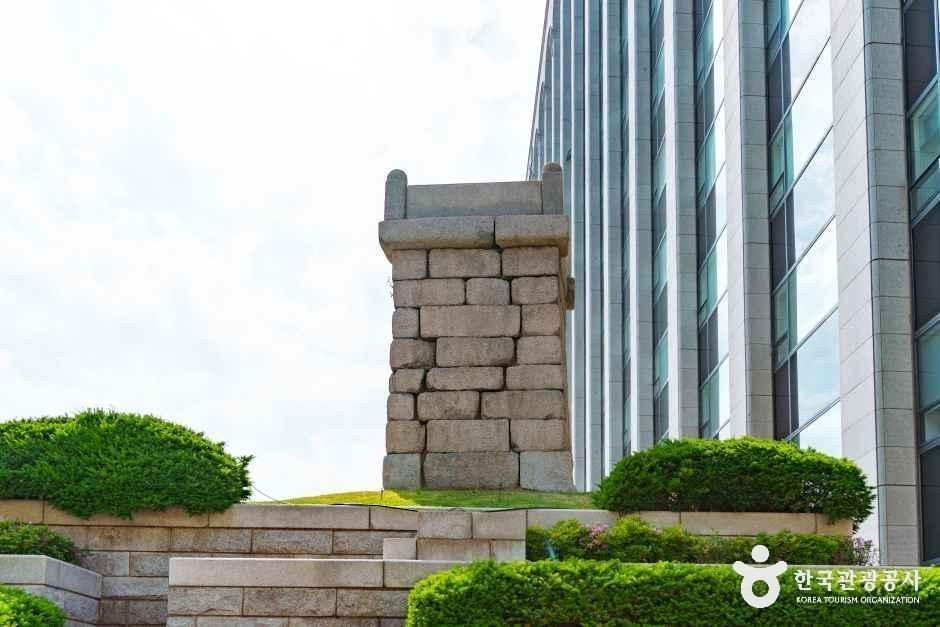
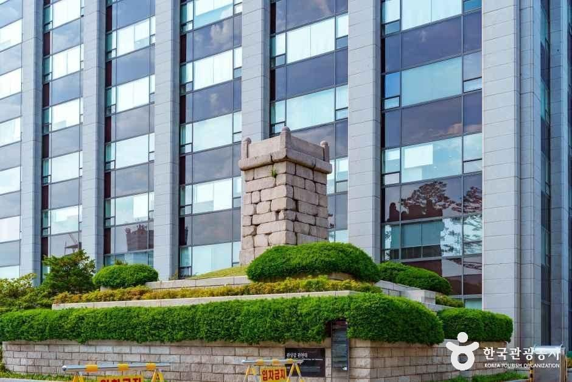
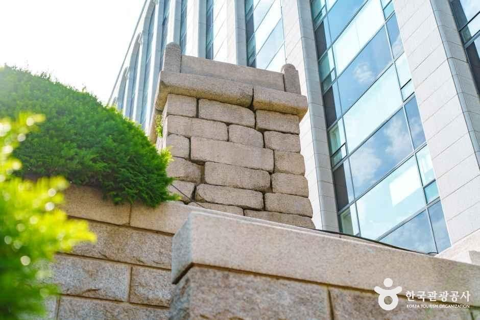
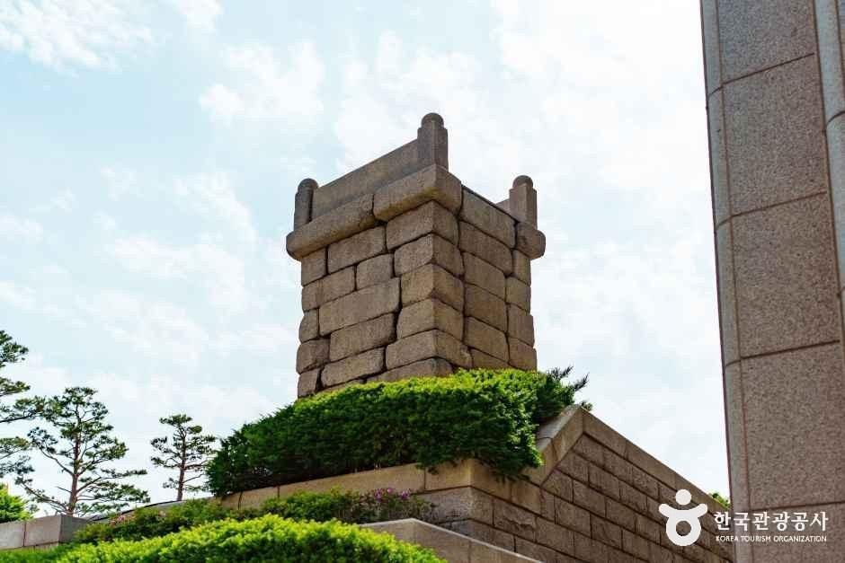

Seoul Gwansanggam Gwancheondae Guide: Overview
This Seoul Gwansanggam Gwancheondae guide takes you to a quiet Joseon astronomy relic in Wonseo-dong, Jongno-gu. Gwancheondae (관천대) is the stone platform where officials once set up instruments to watch the sky, on the grounds of Gwansanggam (관상감)—the office that handled astronomy, geography, weather observation and water clocks.
It's free, always open and easy to pair with a Changdeokgung or Bukchon walk, so it fits a short Seoul heritage stop between bigger palace visits.

A Short History: Seoun-gwan and Joseon Astronomy
Korea Tourism Organization materials describe this platform as the observation stand of Seoun-gwan, installed in Sejong year 16 (1434). Seoun-gwan later became better known as Gwansanggam. The stand was used with instruments such as the soganui (small armillary sphere), which is why it was also called Soganidae, and more broadly Cheomseongdae—"a platform for watching stars."
Historians often set it beside other East Asian sky-watching sites: Silla's Cheomseongdae in Gyeongju, the Goryeo Cheomseongdae near Gaeseong's Manwoldae, and the separate Gwancheondae inside Changgyeonggung Palace in Seoul.


What to See
- The platform itself: A rectangular stack of hewn stone blocks on a low mound—compact, not a towering tower.
- The setting: A pocket of green against modern Jongno buildings, which makes the old-new contrast clear in photos.
- Interpretive plaque: On-site Korean/English information helps place the relic in Joseon science history.


Visitor Information
| Item | Details |
|---|---|
| Name | Seoul Gwansanggam Gwancheondae (서울 관상감 관천대) |
| Also known as | Soganidae · Cheomseongdae (historic nicknames) |
| Area | Wonseo-dong, Jongno-gu, Seoul |
| Built / installed | Sejong 16 (1434) for Seoun-gwan (per KTO) |
| Hours | Always open (year-round) |
| Closed | No closing days listed |
| Admission | Free (outdoor relic) |
| Parking | Not available — use public transit |
| Inquiry | Cultural Heritage / tourism listing phone: +82-42-481-4650 |
| Nearby | Changdeokgung, Bukchon, Insadong, Anguk Station area |
Sources: Korea Tourism Organization (한국관광공사) destination text. Photos © Korea Tourism Organization (KOGL Type 3). We didn't add AI-generated images. Hours and access can change—verify before you go.
Getting There
- Subway: Seoul Metro Line 3 Anguk Station, then walk toward Wonseo-dong / Changdeokgung. Search "관상감 관천대" in Naver Map or Kakao Map for the pin.
- Combine: Pair with Changdeokgung, the Secret Garden, or a Bukchon hanok stroll the same morning.
- Time needed: 15–30 minutes on site.
Tips for a Short Visit
- It's an outdoor stone relic—visit in daylight and watch your step on wet stone.
- Keep voices down; it's a neighborhood heritage pocket, not a theme park.
- No parking: don't plan a car stop.
- Bring a short history note on your phone if you want context beyond the plaque.
Gwancheondae vs. Other Seoul Heritage Spots
| Gwansanggam Gwancheondae | Changdeokgung | Sungnyemun Gate | |
|---|---|---|---|
| Vibe | Tiny Joseon science relic | Grand palace & garden | Iconic city gate ceremony |
| Time | 15–30 min | 1.5–3 hours | 30–60 min |
| Fee | Free | Ticketed palace | Free exterior |
| Best for | History nerds, short add-on | First-time Seoul visitors | Gate / ceremony photos |
Pros & Cons
✅ Pros
- Free, always open, and rarely crowded.
- Clear Joseon astronomy story in a walkable Jongno pocket.
- Easy add-on to Changdeokgung or Bukchon.
- Photogenic old-stone vs modern-city contrast.
⚠️ Cons
- Very small site—don't expect a museum.
- Little English beyond the plaque.
- No parking.
- Easy to miss if you don't search the map pin.
Who It Suits
- Great for: Travelers who like Joseon science and small heritage stops.
- Great for: Anyone already in Jongno / Bukchon who wants one more pin.
- Great for: Photographers who like stone relics against modern Seoul.
- Less ideal: Visitors who only want big palace complexes.
Plan Your Seoul Trip
Gwansanggam Gwancheondae FAQ
What is Gwansanggam Gwancheondae?
It's a Joseon-era astronomical observation platform in Wonseo-dong, Jongno-gu, Seoul, on the historic site of Gwansanggam (the office that handled astronomy, geography, weather and water clocks). It is also known historically as Soganidae or Cheomseongdae.
When was it built?
According to Korea Tourism Organization materials, the platform was installed in Sejong year 16 (1434) for Seoun-gwan, the earlier name of the astronomy office.
Is there an entrance fee?
It is described as always open year-round with free outdoor viewing. There is no parking, so use public transit.
How do I get there?
It's in Wonseo-dong near the Changdeokgung / Jongno old-town area. Search "서울 관상감 관천대" in Naver Map or Kakao Map, or walk from Anguk Station area toward Wonseo-dong.
How is it different from Gyeongju's Cheomseongdae?
Gyeongju's Cheomseongdae is the famous Silla bottle-shaped observatory. Seoul's Gwansanggam Gwancheondae is a rectangular stone platform from Joseon Seoul. Changgyeonggung also has a separate palace Gwancheondae.